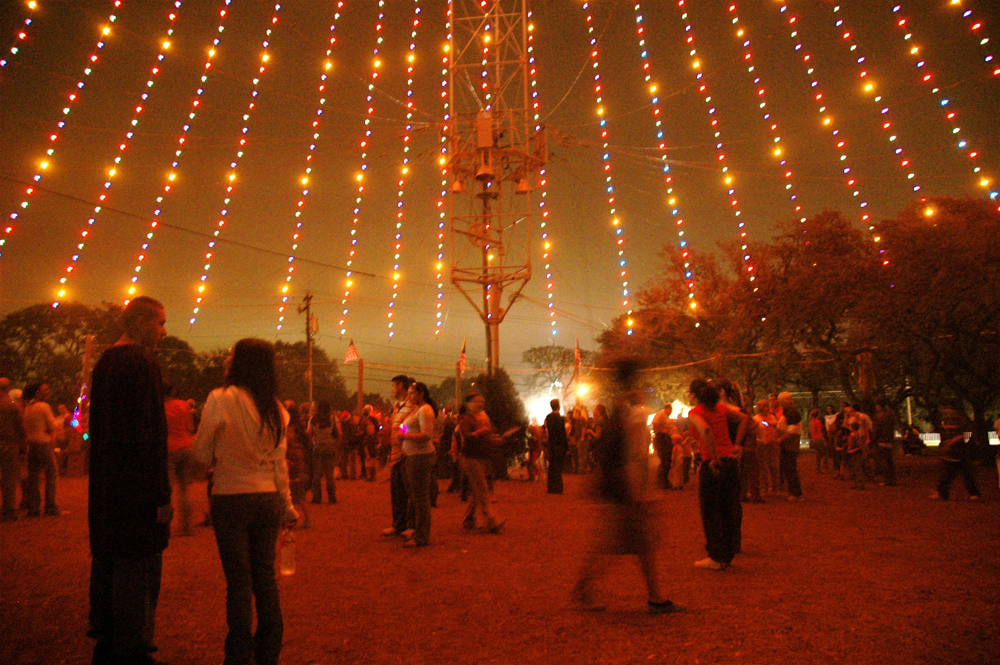
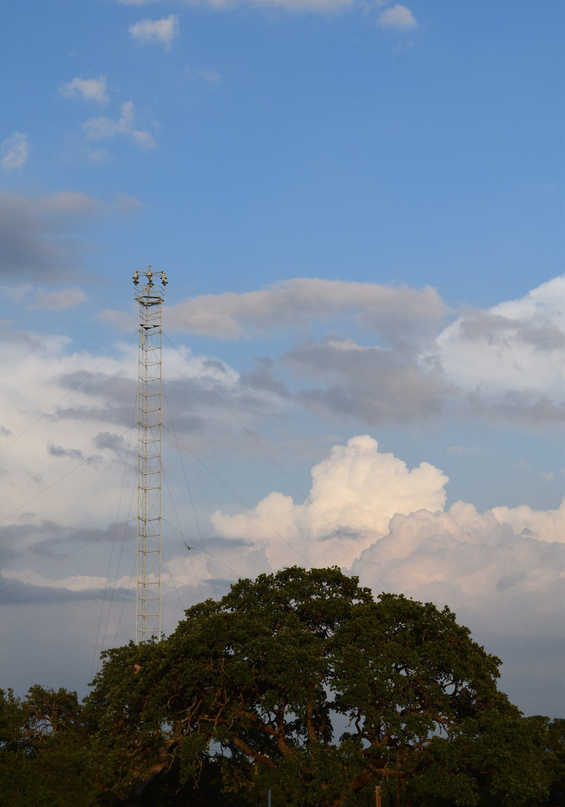
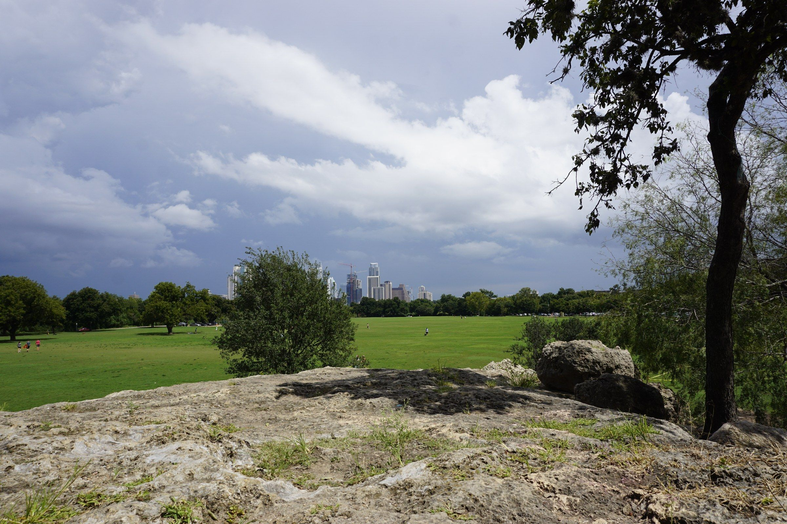
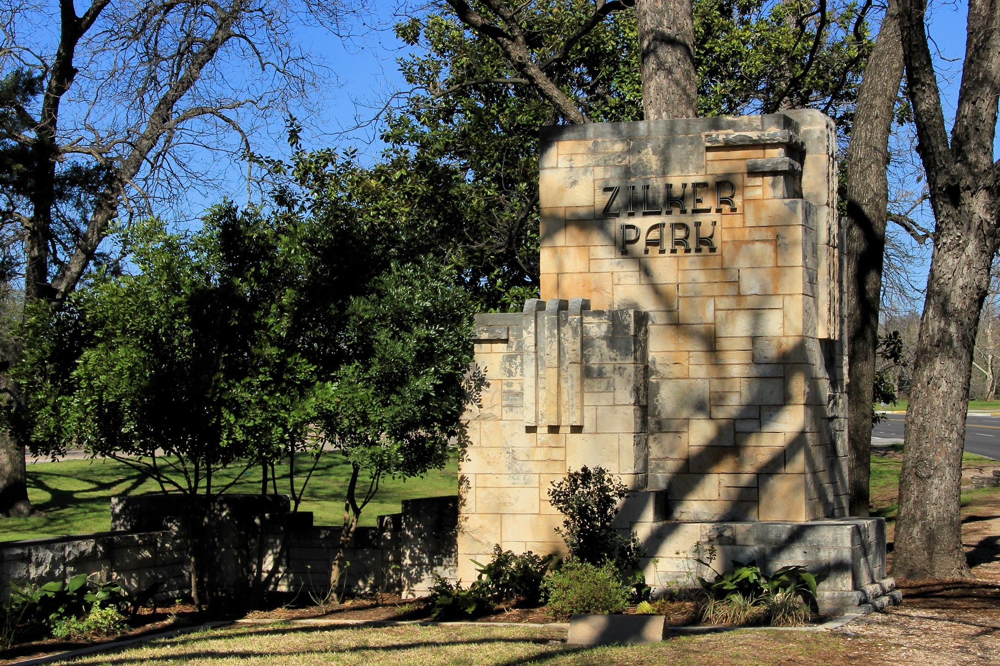

Most cities buy a tree for the holidays. Austin uses a streetlight from 1894.
On most nights of the year, the thing standing in Zilker Park is a moonlight tower. Tall. Spare. A wrought-iron stalk built to throw light over Austin streets the way a full moon would. Come late November, it grows a crown.
This is the Zilker Holiday Tree. On Sunday, November 29, 2026, it lights.
How a tower becomes a tree
Nineteen utility poles, each fourteen feet tall, ring the base of the tower. From that ring, thirty-nine streamers climb to the top. Each carries eighty-one LED bulbs in red, yellow, green and blue. Count the star and that's 3,309 lights.
City of Austin electricians designed the spiral. At the peak sits a double star, ten feet from point to point, lit with one hundred fifty frosted bulbs. The whole figure stands 155 feet tall, measures 380 feet around and 120 feet across.
No tree was cut. Nothing was hauled in. The city just dressed something it already had.

What you're standing under
Austin's moonlight towers went up in 1894 and 1895, the city's first urban lighting system. In the 1890s they burned bright carbon-arc lamps. There were thirty-one. Seventeen remain, and the Zilker tower is one of them. They are the only working moonlight towers in the world. Locals mostly call them moon towers.
In 1970 they were named Texas State Landmarks. In 1976 they were listed on the National Register of Historic Places.
In 2016, Austin Energy restored the Zilker tower: deep-cleaned its parts, repaired what age had worn, fitted new LED bulbs. Austin Energy put the savings at "approximately 131,400 kilowatt-hours annually, which is the equivalent of powering 11 average-sized homes year-round." The tree's streamers went LED in 2019.
In October, Austin Energy crews finished stringing the display again. The yellow bulbs are placed with care along each string. That's what gives the swirl its "distinctive and dizzying" pull. Stand at the base and look up and you'll see what they mean.
A kid and a switch
Mayor Pro Tem Emma Long lit the first tree on December 10, 1967.
These days the honor goes to a child. The parks department runs a citywide tree art contest every fall, and the young winner flips the switch. The Junior Division covers ages five to seven; the Senior Division, eight to ten. One entry each, on paper no larger than eight and a half by eleven inches. This year's entries were due November 1.
Think about the scale of that. A drawing that fits in a backpack. A tower 155 feet tall. One kid between them.
The year it stayed dark
In 1973, after President Nixon declared an energy crisis, the spiral didn't light. Austin went without.
Then it came back. It has kept coming back. This is the tree's 60th holiday season.
Who puts it up
No private spectacle company runs this. The tree is installed, produced and managed by City of Austin departments: Austin Energy, Austin Parks and Recreation, Austin Resource Recovery and the Austin Police Department. That's why it's free, and why it's open to anyone who shows up.

The evening itself
Come early. The Austin Civic Wind Ensemble starts at 5:15 p.m. on the south side of the park, at 2100 Barton Springs Road. At 6:00 p.m. the ceremony begins, with local entertainment, food and live music, and then the moment the spiral catches.
After opening night, the tree stays lit November 29 through January 1, from 6 p.m. until the 10 p.m. park curfew.
Parking for the lighting is free, first-come, first-served, on the paved lots. The City suggests coming in on eastbound Barton Springs Road, or taking CapMetro. The Parks page advises layered clothing and footwear made for the outdoors. Late November nights in the park can get cold.

How to take it in
You don't need a ticket. You need a clear evening and a willingness to tip your head back.
Stand inside the ring of poles and watch the spiral climb away from you. Or come back on a quieter night, take the eastbound Barton Springs lanes the City recommends, and watch the double star from a distance.
It's 1890s iron wearing LEDs, switched on by a kid with a drawing. Hard to think of a more Austin way to start winter.
Sunday, November 29, 2026. Music at 5:15. Lights at 6. Zilker Park, south side, 2100 Barton Springs Road. Free. Then every night through New Year's Day, 6 to 10 p.m.